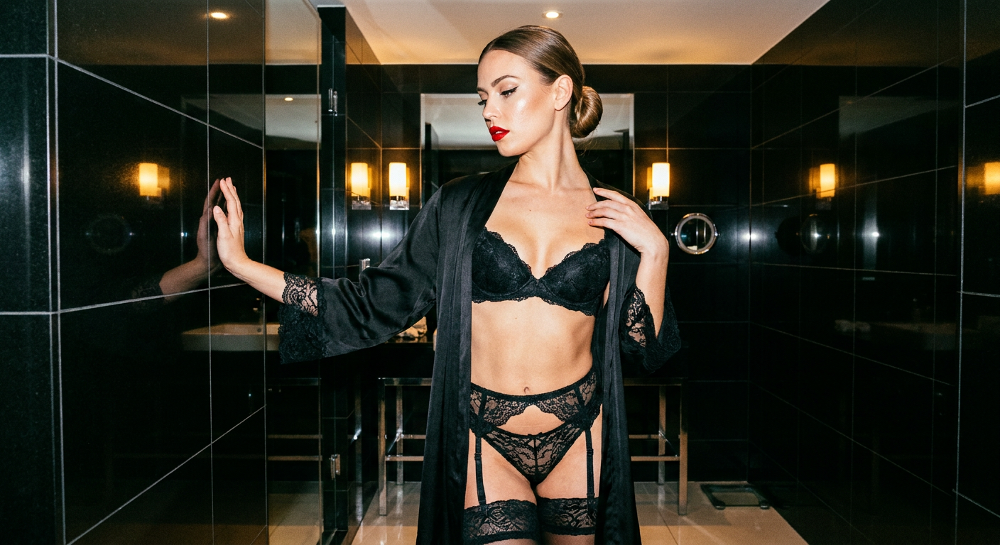
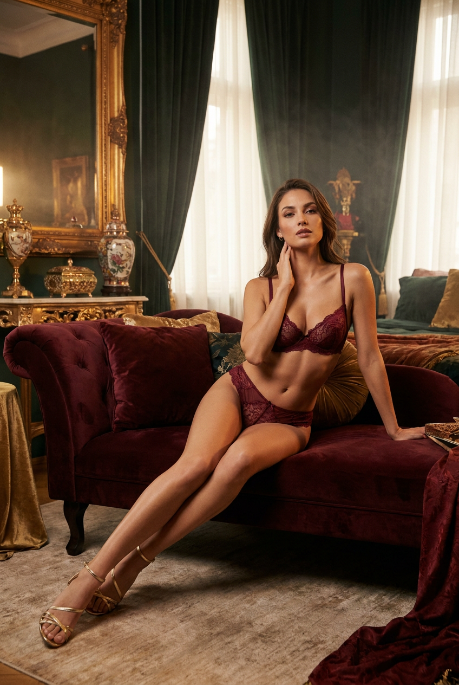
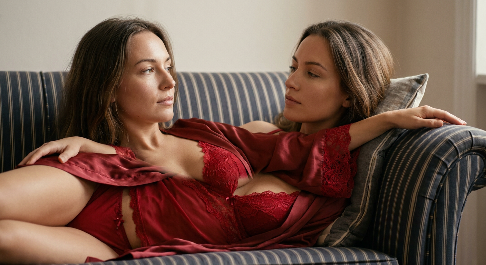
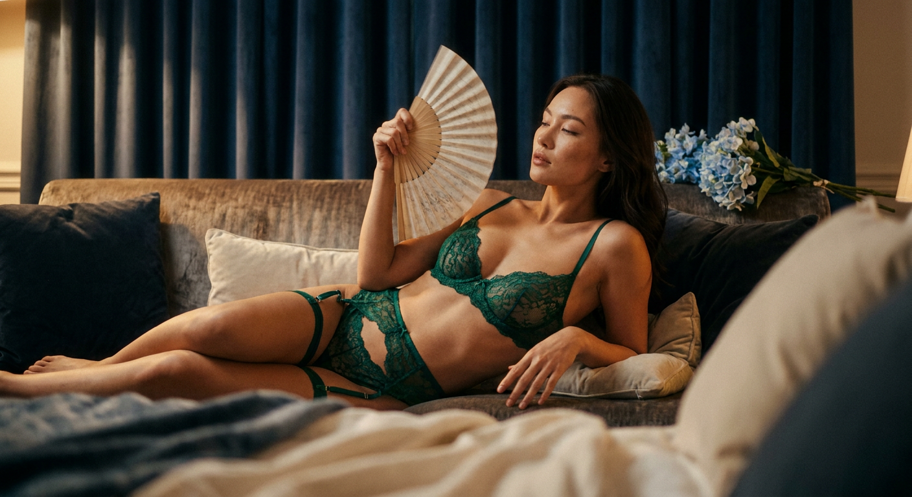
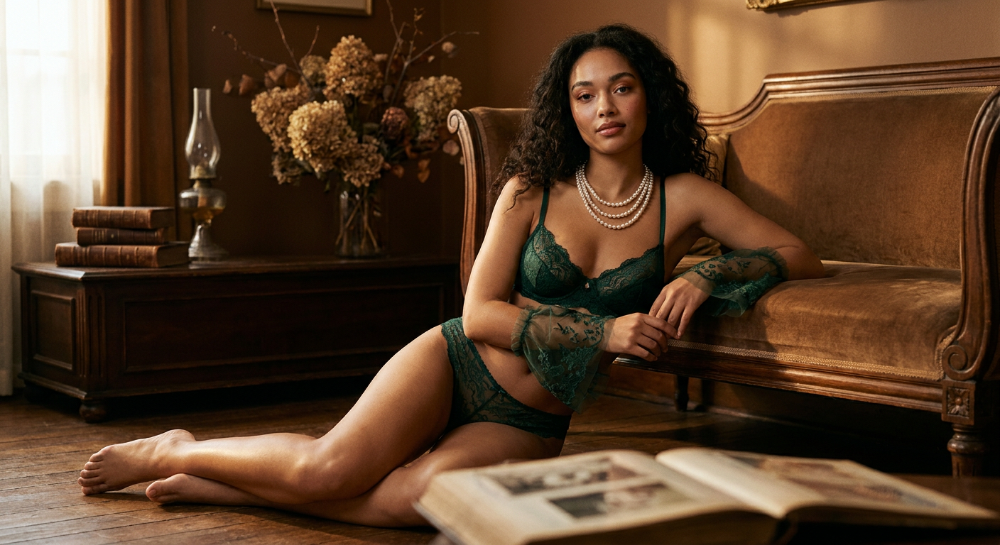
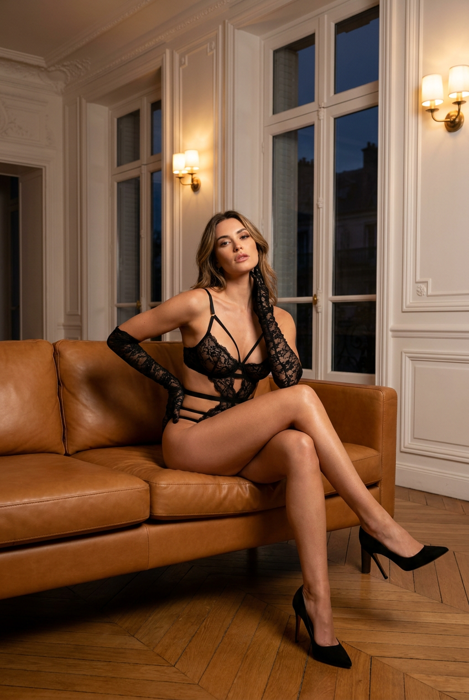
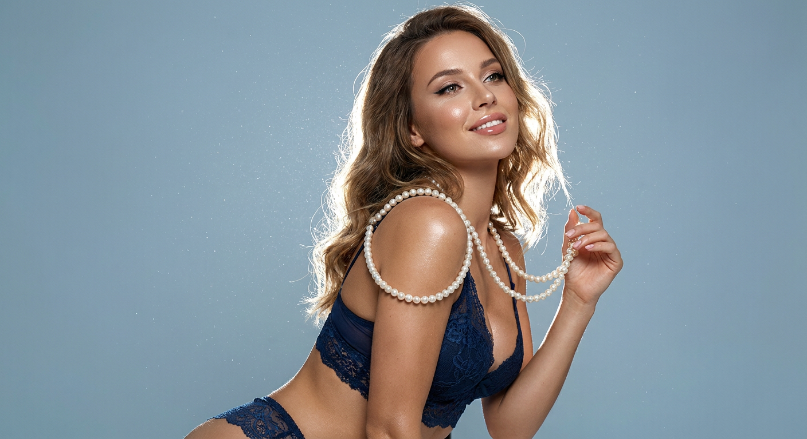
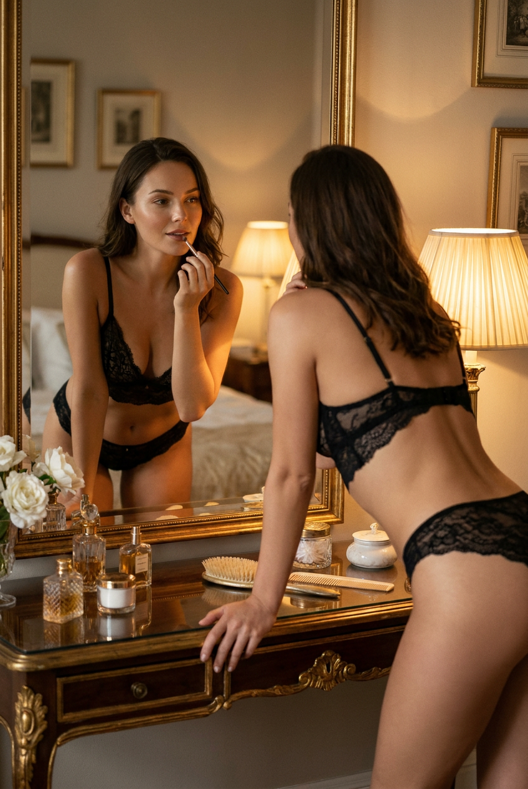
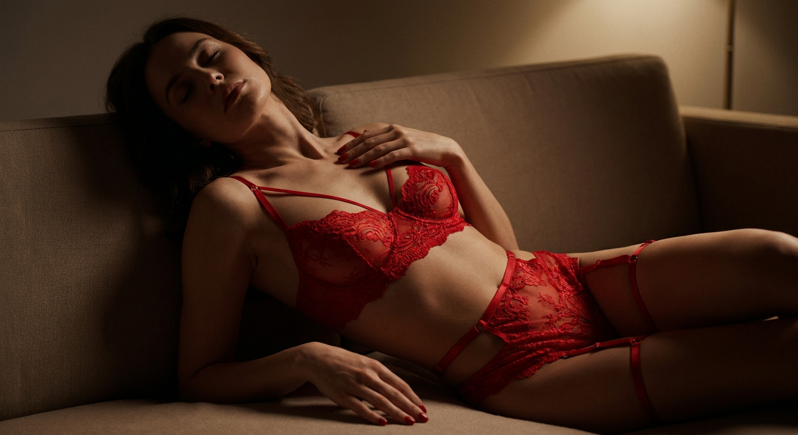
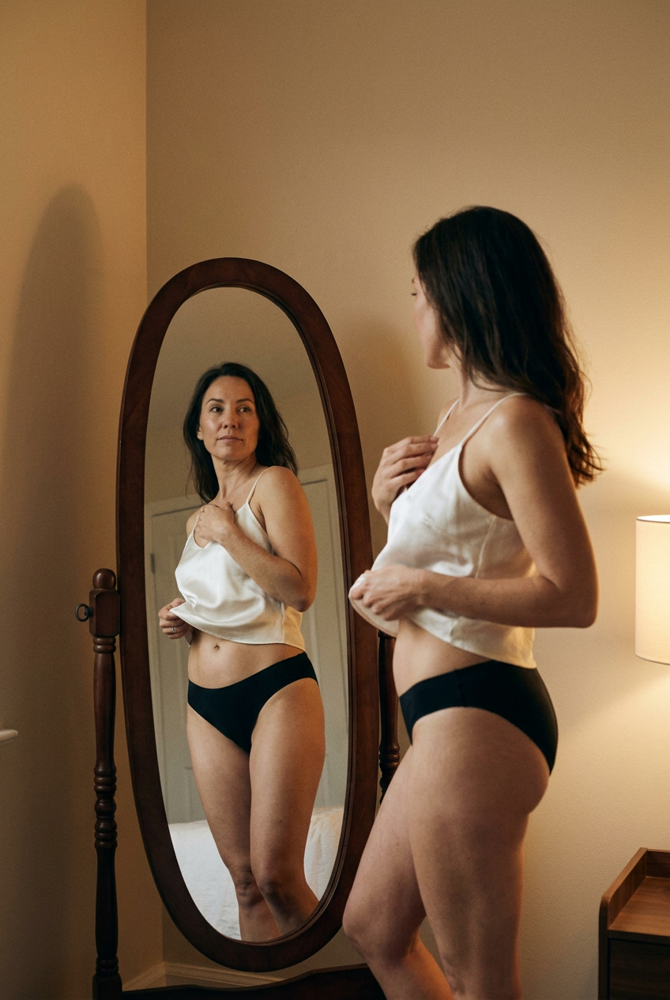

ИИ-фото в белье: 10 промптов для нейросети

Обычный запрос вроде «сделай красивое фото в белье» часто даёт случайную позу, пластиковую кожу и интерьер без настроения. Генерация по подробному сценарию помогает заранее задать свет, композицию, одежду и характер кадра.
В подборке — 10 готовых промптов для взрослых моделей: съёмка со вспышкой в ванной, бархатный диван, кожаный интерьер, туалетный столик, зеркало и студийный портрет с сияющими частицами. Если используете фото-референс, работайте только со своим изображением или с разрешения человека.
Как сгенерировать такое фото: пошагово
Нужен снимок анфас при ровном свете, лицо в кадре целиком, без тёмных очков и головных уборов. Разрешение от 1000 пикселей по короткой стороне. Чем чётче исходник, тем точнее модель повторит черты.
Выберите сценарий ниже и нажмите «Копировать» — текст уйдёт в буфер целиком, вместе с командой сохранения внешности. Эта команда стоит первой строкой и отвечает за то, чтобы на выходе было ваше лицо, а не случайное.
Кнопка «Сгенерировать» рядом с каждым промптом открывает модель в новой вкладке. Nano Banana Pro работает с референсом лица — в отличие от моделей, которые генерируют портрет с нуля и узнаваемость теряют.
Промпт — в поле ввода, портрет — через загрузку референса. Порядок значения не имеет, но без референса команда сохранения внешности работать не будет: модели нечего сохранять.
Для сторис и ленты берите 9:16, для превью и обложек — 4:3. Первый результат редко идеален: если поза или свет ушли не туда, поправьте соответствующую часть промпта и запустите заново. Обычно хватает двух-трёх итераций.
10 промптов для генерации
1. Ванная со вспышкой
Строго сохранить внешность по загруженному референсу: черты лица, пропорции, мимику и текстуру кожи без изменений. Фотореалистичный вертикальный портрет взрослой женщины, снятый на iPhone с жёсткой фронтальной вспышкой. Кадр плотный, по пояс, героиня немного смещена от центра, чтобы получить живую асимметрию. Она стоит в просторной современной ванной: стены покрыты крупной чёрной глянцевой плиткой, в которой отражаются вспышка и силуэт. На заднем плане видны зеркала в тонких рамах и тёплые лампы бра. Женщина опирается одной ладонью на стену, вторую подносит к плечу. На ней чёрный кружевной комплект с лифом, трусами, поясом для чулок и чулками, поверх — чёрный шёлковый халат с кружевной отделкой. Волосы собраны в гладкий низкий пучок, на губах красная помада, глаза подчёркнуты выразительными стрелками. Взгляд дерзкий, прямо в объектив. Контрастный свет даёт резкие блики на плитке, коже и ткани.
2. Бархатный диван

Строго сохранить внешность по загруженному референсу: черты лица, пропорции, мимику и текстуру кожи без изменений. Вертикальная фотореалистичная fashion-editorial фотография взрослой женщины с естественно сохранёнными чертами лица по загруженному референсу: узнаваемые глаза, брови, нос, губы, скулы, подбородок, линия роста волос и тон кожи. Она сидит или полулежит на широком диване либо chaise lounge, обитом глубоким бордовым бархатом. Поза элегантная и уверенная: корпус слегка развёрнут в сторону, одна рука легко касается шеи, плеча или подбородка, другая расслабленно лежит на подушке. Одна нога вытянута вперёд или закинута на другую, создавая длинную скульптурную линию. На женщине изящный комплект нижнего белья и мягкий халат-накидка. Настроение — дорогая журнальная съёмка с лёгкой театральностью, без вульгарности. Мягкий направленный свет подчёркивает фактуру бархата, кожу и контуры фигуры, фон уходит в спокойные глубокие тени.
3. Красный комплект на диване

Строго сохранить внешность по загруженному референсу: черты лица, пропорции, мимику и текстуру кожи без изменений. Фотореалистичный lifestyle-будуарный портрет взрослой женщины в нейтральном макияже, с лицом, максимально точно повторяющим загруженный референс: сохранить форму глаз, бровей, носа, губ, овал, пропорции и спокойную мимику. Ракурс три четверти, лицо повернуто влево, взгляд направлен вдаль. На ней красный непрозрачный комплект белья с кружевной отделкой по краям и шелковый халат-накидка. Женщина лежит на боку или на спине на диване, снята с бокового ракурса. Тело расположено по диагонали к камере, голова слегка приподнята на подушке; одна рука отведена назад вдоль спинки или подлокотника, вторая частично попадает в кадр. Диван имеет полосатую обивку: тёмно-синий или серо-синий фон с тонкими светлыми полосами. Свет мягкий, боковой, с естественными тенями и деликатной передачей ткани.
4. Веер и бархатный диван

Строго сохранить внешность по загруженному референсу: черты лица, пропорции, мимику и текстуру кожи без изменений. Атмосферный кинематографичный модный портрет взрослой женщины в интерьере с ощущением сдержанной роскоши и вечерней тишины. Она расположена на мягком бархатном диване среди выразительных фактур. Композиция асимметричная: героиня смещена от центра, кадр построен от талии до головы, камера находится немного ниже уровня глаз. Перед объективом проходят мягко размытые складки ткани или край подушки, создавая глубину. Поза свободная: женщина слегка откинулась назад, шея открыта, голова естественно наклонена в сторону или назад. В одной руке она держит изящный складной веер, частично закрывающий лицо; вторая рука расслабленно лежит рядом. На ней элегантное чёрное или тёмное бельё и лёгкий халат. Используйте тёплый боковой свет, глубокие мягкие тени, кинематографичную цветокоррекцию и реалистичную фактуру кожи.
5. Винтажная гостиная

Строго сохранить внешность по загруженному референсу: черты лица, пропорции, мимику и текстуру кожи без изменений. Вертикальная фотореалистичная fashion-editorial фотография взрослой женщины с точным естественным сходством с загруженным референсом. Она сидит на полу рядом с низкой антикварной кушеткой, диваном или скамьёй в старинной гостиной. Корпус мягко прислонён к мебели, один локоть или бок опирается на её край, а другая рука касается лица или шеи. Ноги вытянуты и собраны в длинную элегантную линию; поза чувственная, но стилизованная и спокойная. На женщине изысканный комплект белья с кружевными деталями, поверх может лежать лёгкий халат или накидка. Вокруг — состаренное дерево, винтажная обивка, приглушённые кремовые и коричневые оттенки, детали антикварного интерьера. Свет мягкий, направленный из окна сбоку, с деликатными тенями. Сохранить натуральную кожу, живую мимику и журнальную ретушь без пластиковой гладкости.
6. Карамельный кожаный диван

Строго сохранить внешность по загруженному референсу: черты лица, пропорции, мимику и текстуру кожи без изменений. Фотореалистичная вертикальная boudoir-fashion фотография взрослой женщины в классическом роскошном интерьере, выполненная как дорогая журнальная съёмка. Лицо, глаза, брови, нос, губы, оттенок кожи и пропорции должны естественно совпадать с загруженным референсом. Женщина сидит на большом кожаном диване тёплого карамельно-коричневого оттенка. Она слегка откинулась назад, одну ногу перекинула через другую, подчёркивая линию бёдер и ног. Одна рука лежит на диване или заведена за спину, вторая поднята к шее или щеке, создавая расслабленный томный жест. На ней элегантный комплект белья, дополненный шёлковым халатом или накидкой. В интерьере — дерево, мягкий локальный свет и глубокие янтарные оттенки. Камера на уровне глаз, объектив 85 мм, малая глубина резкости, мягкие блики на коже и реалистичная фактура кожи дивана.
7. Сияющие частицы в студии

Строго сохранить внешность по загруженному референсу: черты лица, пропорции, мимику и текстуру кожи без изменений. Фотореалистичная high-end fashion-beauty фотография взрослой женщины с максимально точной передачей лица по загруженному референсу: сохранить индивидуальные черты, естественную мимику, линию роста волос и оттенок кожи без пластиковой ретуши. Героиня стоит в студийной постановке на фоне мягкого сине-серого градиента. На ней изысканный комплект белья с элегантной отделкой и лёгкая полупрозрачная накидка, не скрывающая силуэт. Вокруг, особенно в верхней части кадра, парят мелкие мерцающие частицы, похожие на светящуюся пыль, снежную дымку или деликатный глиттер. За головой и плечами расположен яркий контровой источник, формирующий тонкий сияющий ореол вокруг волос и фигуры. Передний свет мягкий и бьюти-направленный, кожа выглядит живой. Композиция вертикальная, кадр от бёдер до головы, настроение дорогое, женственное и воздушное.
8. Отражение у туалетного столика

Строго сохранить внешность по загруженному референсу: черты лица, пропорции, мимику и текстуру кожи без изменений. Фотореалистичная вертикальная boudoir-fashion фотография взрослой женщины в винтажной комнате у старинного туалетного столика с зеркалом. Камера находится позади героини, поэтому одновременно видны её спина, плечи, часть талии и отражение лица. Женщина стоит боком или слегка наклоняется вперёд к столу; одна рука опирается на его поверхность, другая поднята к губам или подбородку. На ней элегантный комплект белья и лёгкий шёлковый халат, детали ткани выглядят натурально и не теряются в тенях. Отражение должно быть анатомически согласовано с позой, без второго лица и лишних пальцев. В интерьере — состаренное дерево, косметические флаконы, мягкие бежево-коричневые оттенки и патина. Тёплый боковой свет от ламп подчёркивает контуры, зеркало даёт глубину, цветокоррекция напоминает дорогую плёночную съёмку.
9. Красное бельё в полумраке

Фотореалистичная вертикальная boudoir-сцена на бежевом диване в приглушённом полумраке. Взрослая женщина полулежит, голова слегка откинута назад, шея вытянута, а линия ключиц мягко выделена светом. На ней ярко-красное кружевное бельё с тонкими бретелями и сложным ажурным рисунком, а также декоративные ремешки на талии и бедре. Кружево может выглядеть фактурным и слегка просвечивающим, но кадр остаётся эстетичным и журнальным. Одна рука мягко прикрывает грудь, на ногтях красный лак, вторая спокойно лежит на диване. Верхний источник справа создаёт тёплые блики по телу и глубокие выразительные тени. Лицо частично скрыто полумраком, глаза не смотрят прямо в объектив, выражение остаётся загадочным. Сохранить внешность по референсу без искажений.
10. Белое бельё у зеркала

Строго сохранить внешность по загруженному референсу: черты лица, пропорции, мимику и текстуру кожи без изменений. Фотореалистичная вертикальная boudoir-editorial фотография взрослой женщины в спокойном домашнем интерьере перед высоким овальным зеркалом в тёмной деревянной раме. Комната минималистичная: бежевые или кремовые стены, мягкие тени, немного предметов, тёплая камерная атмосфера аналоговой плёнки. Женщина стоит в пол-оборота к камере, её отражение хорошо видно в зеркале. Одна рука поднята и слегка натягивает или придерживает белую лёгкую ткань — халат, накидку или бретель, вторая свободно опущена или касается бедра. На ней белый комплект белья с деликатной фактурой, образ выглядит чувственно, но не пошло. Следить за совпадением позы и отражения, правильной геометрией зеркала и анатомией кистей. Свет рассеянный, тёплый, с мягким зерном, низкой контрастностью и естественной текстурой кожи.
Что важно учесть в этом стиле
ИИ-фото в белье лучше работают как fashion- или boudoir-съёмка, а не как набор случайных откровенных деталей. Сначала задайте возраст модели, настроение и границы образа, затем опишите позу, интерьер, свет и материал одежды. Для такого сюжета подходят взрослые персонажи и изображения людей, на использование которых у вас есть разрешение.
Референс лица не гарантирует идеального сходства с первой попытки. Нейросеть может изменить форму глаз, пальцы или отражение в зеркале. Проверяйте крупный кадр, кисти, бретели, кружево и соответствие отражения исходной позе. Если нужен стабильный результат, фиксируйте соотношение сторон 2:3 или 4:5, объектив 50–85 мм и мягкую глубину резкости.
Идеи для вариаций
- Замените чёрную плитку на мрамор, травертин или матовую зелёную керамику.
- Попросите съёмку на 35-мм плёнку с лёгким зерном, засветкой по краям и приглушёнными цветами.
- Добавьте утренний свет из окна вместо вспышки или ламп бра.
- Перенесите сцену на кровать с белым льняным бельём и смятыми простынями.
- Сделайте серию в одной локации: общий план, портрет по пояс и деталь рук или ткани.
- Замените веер на длинные перчатки, шёлковую ленту, книгу в винтажной обложке или бокал без алкоголя.
Как собрать свой промпт
Разделите описание на пять частей: герой и возраст, одежда, поза, локация, свет и камера. Не смешивайте несколько разных настроений в одном запросе: например, жёсткую вспышку и исключительно мягкий рассеянный свет. Лучше указать один главный источник, его направление и характер теней.
Для точного результата добавьте технические параметры: вертикальный кадр 2:3, объектив 50 или 85 мм, диафрагма f/2–f/4, натуральная кожа, реалистичная фактура ткани, разрешение 4K. После первой генерации меняйте за один раз только один блок — позу, фон или свет. Так проще понять, что именно улучшило изображение.
Ошибки, из-за которых кадр не получается
- Слишком общий запрос. Фраза «красивая девушка в белье» не задаёт ни позу, ни свет, ни характер фотографии.
- Несовместимые источники света. Жёсткая вспышка, золотой час и мягкий студийный софтбокс одновременно дают грязные тени.
- Перегруженная одежда. Если перечислить слишком много ремешков, кружев и аксессуаров, модель может исказить детали.
- Игнорирование рук и отражений. В зеркальных сценах отдельно указывайте анатомию кистей и совпадение отражения с позой.
- Чрезмерная ретушь. Формулировки вроде «идеальная фарфоровая кожа» часто превращают реалистичный портрет в пластиковый.
- Нет ограничений по возрасту и стилю. Указывайте взрослую модель, эстетичную fashion-съёмку и отсутствие пошлости.
Частые вопросы
Как сделать такое ИИ-фото бесплатно?
Для первых попыток подойдут Kandinsky и Шедеврум: они позволяют генерировать изображения без оплаты, но качество белья, рук и сложных поз может быть нестабильным. Krea AI и Arena.ai удобны для экспериментов и сравнения вариантов, однако доступность функций меняется, а точная работа с лицом по референсу ограничена. Бесплатные режимы часто дают очередь, лимиты и меньше настроек. Не загружайте чужие интимные фотографии без согласия.
Как сохранить сходство с лицом на референсе?
Используйте чёткий портрет при равномерном освещении и описывайте, какие черты нужно сохранить. Не меняйте одновременно причёску, возраст, ракурс и выражение лица. Сделайте несколько генераций, выберите самый близкий вариант и при необходимости доработайте его отдельным инструментом редактирования.
Почему нейросеть искажает кружево и ремешки?
Мелкие повторяющиеся элементы относятся к самым сложным деталям для генерации. Описывайте один комплект простыми словами, указывайте материал и цвет, а не перечисляйте десятки застёжек. Для крупного плана можно попросить реалистичную фактуру ткани, но не требовать одновременно прозрачности, сложного узора и множества тонких ремешков.
Как сделать сцену чувственной, но эстетичной?
Сместите акцент с открытости на свет, позу, ткань и интерьер. Помогают спокойное выражение лица, естественный жест, мягкие тени, закрытые участки тела и журнальная композиция. Укажите, что модель взрослая, съёмка выполнена в стиле fashion или boudoir-editorial, а результат должен быть элегантным и не пошлым.